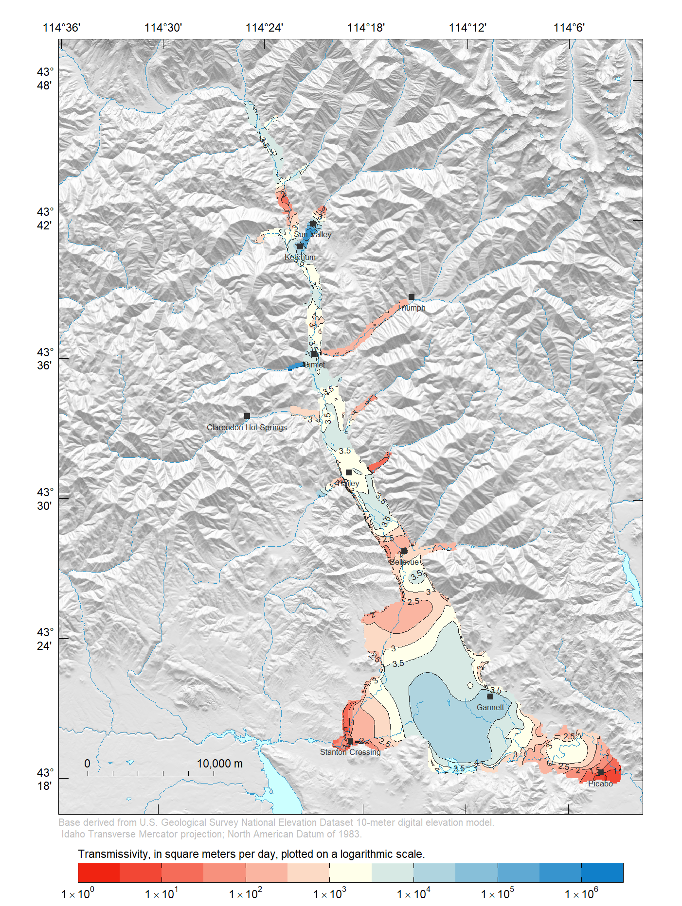
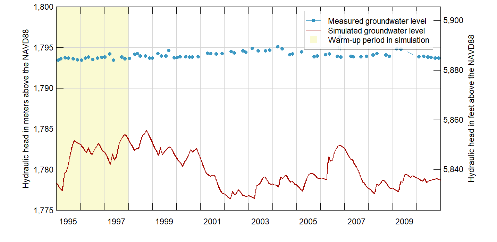

Calibrated Model
Running and analysing the archived calibrated model.
Reconstitute Model Files
These instructions describe how to reconstitute the file structure for a calibrated model run.
Startup an R session. Set the working directory of R processes to the “wrv-training” folder. To do so, paste the following command in your R session and navigate to the “wrv-training” folder.
setwd(choose.dir())Load the wrv, inlmisc, and raster R packages in our current R environment. To do so, open an R session and use the following command.
library(wrv)
library(inlmisc)
library(raster)Download model files
Next, download model-input files for the calibrated model, archived on the USGS Water Resources NSDI Node. Model-input files will be written to the “archive” folder in your working directory.
url <- "http://water.usgs.gov/GIS/dsdl/gwmodels/SIR2016-5080/model.zip"
file <- file.path(tempdir(), basename(url))
download.file(url, file)
files <- unzip(file, exdir = tempdir())
files <- files[basename(files) != "usgs.model.reference"]
dir.create("archive", showWarnings=FALSE, recursive=TRUE)
file.copy(files, "archive", overwrite = TRUE)Download model-output files for the calibrated model from the NSDI Node, and place them in the “archive” folder.
url <- "http://water.usgs.gov/GIS/dsdl/gwmodels/SIR2016-5080/output.zip"
file <- file.path(tempdir(), basename(url))
download.file(url, file)
files <- unzip(file, exdir = tempdir())
file.copy(files, "archive", overwrite = TRUE)Download the archived MODFLOW-USG executable (64-bit) file from the NSDI Node, and place it in the “archive” folder.
url <- "http://water.usgs.gov/GIS/dsdl/gwmodels/SIR2016-5080/bin.zip"
file <- file.path(tempdir(), basename(url))
download.file(url, file)
files <- unzip(file, exdir = tempdir())
file.copy(files[grep("\\.exe$", files)], "archive", overwrite = TRUE)Batch file for running model
Create a batch file (“archive/RunModflow.bat”) containing commands that may be used to run the model from File Explorer.
cat("mfusg \"wrv_mfusg.nam\"", file = "archive/RunModflow.bat")There are four files used in the water-budget calculation that already reside in the “archive” folder. The “eff.csv”, “seep.csv”, and “trib.csv” files contain optimized values of irrigation efficiency, canal seepage, and tributary underflow, respectively. The “model.rda” file contains R objects d.in.mv.ave, misc, reduction, rs, ss.stress.periods, tr.stress.periods, and trib. A description of each these objects is given in the help documentation of the UpdateWaterBudget function in the wrv package. At some future date all four water-budget input files will be added to the model archive.
Run water-budget calculation
Run the water-budget calculation and specify to write out quality assurace tables (“archive/qa-*.csv”). The MODFLOW Well Package file will be re-written (“archive/wrv_mfusg.wel”), however, the file should not have changed because all the water-budget input files have not changed.
UpdateWaterBudget("archive", "wrv_mfusg", qa.tables = "english")Post-Process Model
These instructions describe an example analysis of model output.
Load R objects from a R-data file in the archive folder (“archive/model.rda”) and list all objects in your R environment.
load("archive/model.rda")
cat(ls(), sep = ", ")## d.in.mv.ave, file, files, misc, reduction, rs, ss.stress.periods, tr.stress.periods, trib, urlCalculate transmissivity
Transmissivity is a measure of how much water can be transmitted horizontally, such as to a pumping well. To calculate transmissivity values in model layer 1, multiply the layer thickness by the calibrated hydraulic conductivity. Recall that a specified-thickness approximation was made in model construction, in other words, the saturated thickness is assumed to be independent from head changes in the aquifer system. Therefore, we can get away with using layer thickness rather than saturated thickness in layer 1.
Write a simple function to read model input reference files (“*.ref”).
ReadReferenceFile <- function(file, mask.value = 1e+09) {
x <- scan(file, quiet = TRUE)
x[x == mask.value] <- NA
r <- raster(rs)
r[] <- x
return(r)
}Put our new function to use and read in the calibrated hydraulic conductivity values. Realize that the R object rs stores raster layers describing the geometry of the model grid.
r <- ReadReferenceFile("archive/hk1.ref")
names(r) <- "lay1.hk"
rs <- stack(rs, r)
r <- ReadReferenceFile("archive/hk2.ref")
names(r) <- "lay2.hk"
rs <- stack(rs, r)
r <- ReadReferenceFile("archive/hk3.ref")
names(r) <- "lay3.hk"
rs <- stack(rs, r)
print(rs)## class : RasterStack
## dimensions : 542, 299, 162058, 7 (nrow, ncol, ncell, nlayers)
## resolution : 100, 100 (x, y)
## extent : 2466200, 2496100, 1344139, 1398339 (xmin, xmax, ymin, ymax)
## coord. ref. : +proj=tmerc +lat_0=42 +lon_0=-114 +k=0.9996 +x_0=2500000 +y_0=1200000 +datum=NAD83 +units=m +no_defs +ellps=GRS80 +towgs84=0,0,0
## names : lay1.top, lay1.bot, lay2.bot, lay3.bot, lay1.hk, lay2.hk, lay3.hk
## min values : 1.468732e+03, 1.443767e+03, 1.438767e+03, 1.385819e+03, 7.165530e-01, 3.916876e-05, 5.486279e+00
## max values : 1945.9944, 1909.8595, 1652.5428, 1624.6990, 37290.6100, 236.1906, 5153.6430Calculate the transmissivity of model layer 1.
r <- (rs[["lay1.top"]] - rs[["lay1.bot"]]) * rs[["lay1.hk"]]Finally, construct a map of transmissivity in model layer 1
r[] <- log10(r[])
Pal <- colorRampPalette(c("#F02311", "#FFFFEA", "#107FC9"))
usr.map <- c(2451504, 2497815, 1342484, 1402354)
breaks <- pretty(r[], n = 15, na.rm = TRUE)
at <- breaks[c(TRUE, FALSE)]
labels <- ToScientific(10^at, digits = 1, lab.type = "plotmath")
credit <- paste("Base derived from U.S. Geological Survey National Elevation Dataset 10-meter digital",
"elevation model.\nIdaho Transverse Mercator projection; North American Datum of 1983.")
explanation <- "Transmissivity, in square meters per day, plotted on a logarithmic scale."
PlotMap(r, breaks = breaks, xlim = usr.map[1:2], ylim = usr.map[3:4], bg.image = hill.shading,
bg.image.alpha = 0.6, dms.tick = TRUE, pal = Pal, explanation = explanation,
rivers = list(x = streams.rivers), lakes = list(x = lakes),
labels = list(at = at, labels = labels), credit = credit, contour.lines = list(col = "#1F1F1F"))
plot(cities, pch = 15, cex = 0.8, col = "#333333", add = TRUE)
text(cities, labels = cities@data$FEATURE_NA, col = "#333333", cex = 0.5, pos = 1, offset = 0.4)
Compare Head Hydrographs
Read simulated hydraulic heads for the calibrated model, located in “archive” folder.
heads <- ReadModflowBinary("archive/wrv_mfusg.hds")
dates <- as.Date(vapply(heads, function(i) i$totim, 0), origin = tr.stress.periods[1])
layer <- vapply(heads, function(i) i$ilay, 0L)
FUN <- function(i) {return(setValues(raster(rs), i$d))}
rs.heads.lay1 <- mask(stack(lapply(heads[layer == 1L], FUN)), rs[["lay1.bot"]])
rs.heads.lay2 <- mask(stack(lapply(heads[layer == 2L], FUN)), rs[["lay2.bot"]])
rs.heads.lay3 <- mask(stack(lapply(heads[layer == 3L], FUN)), rs[["lay3.bot"]])
raster.names <- format(dates[layer == 1L])
names(rs.heads.lay1) <- raster.names
names(rs.heads.lay2) <- raster.names
names(rs.heads.lay3) <- raster.namesAggregate each wells spatial location, observed head, simulated head, and residual head data.
well <- obs.wells
head <- obs.wells.head
well.config <- GetWellConfig(rs, well, "PESTNAME")
FUN <- function(i) {
idxs <- which(well.config$PESTNAME == i)
return(max(well.config[idxs, "lay"]))
}
well@data$lay <- vapply(unique(well.config$PESTNAME), FUN, 0L)
head <- dplyr::left_join(head, well@data[, c("PESTNAME", "desc", "lay")], by = "PESTNAME")
head$Date <- as.Date(head$DateTime)
head$head.obs <- head$Head
FUN <- function(i) {
loc <- well[match(head$PESTNAME[i], well@data$PESTNAME), ]
idx <- findInterval(head$Date[i], as.Date(raster.names), all.inside = TRUE)
rs <- subset(get(paste0("rs.heads.lay", head$lay[i])), c(idx, idx + 1L))
y <- extract(rs, loc)
x <- as.numeric(as.Date(raster.names)[c(idx, idx + 1L)])
return((y[2] - y[1]) / (x[2] - x[1]) * (as.numeric(head$Date[i]) - x[1]) + y[1])
}
head$head.sim <- vapply(seq_len(nrow(head)), FUN, 0)
head$head.res <- head$head.obs - head$head.sim
x <- aggregate(head[, c("head.obs", "head.sim", "head.res")],
by = list(PESTNAME = head$PESTNAME), mean)
well@data <- dplyr::left_join(well@data, x, by = "PESTNAME")Choose a single well from the 776 wells in the aquifer system. We selected a well based on its USGS NWIS site number (SiteNo); although one could easily select it based on other well attributes, such as the IDWR site number (SITEIDIDWR), PEST identifier (PEST), common well name (WELLNUMBER), or its geographical coordinates.
site.no <- "432650114144701"
w <- well[well$SiteNo %in% site.no, ]
rb <- get(paste0("rs.heads.lay", w@data$lay))
ext <- t(extract(rb, coordinates(w)))
head.sim <- data.frame(Date = as.Date(rownames(ext)), head.sim = ext[, 1])
head.obs <- head[head$PESTNAME == w@data$PESTNAME, , drop = FALSE]
cat(with(w@data, sprintf("Well No. %s, USGS NWIS Site No. %s", WELLNUMBER, SiteNo)))## Well No. 01N 18E 01DAA2, USGS NWIS Site No. 432650114144701The location of the well is shown in the following figure.
PlotMap(crs(hill.shading), xlim = usr.map[1:2], ylim = usr.map[3:4], bg.image = hill.shading,
dms.tick = TRUE, bg.image.alpha = 0.6, rivers = list(x = streams.rivers),
lakes = list(x = lakes), credit = credit)
plot(alluvium.extent, border = "#FFFFFFCC", col = NA, add = TRUE)
plot(cities, pch = 15, cex = 0.8, col = "#333333", add = TRUE)
text(cities, labels = cities@data$FEATURE_NA, col = "#333333", cex = 0.5, pos = 1, offset = 0.4)
points(w, pch = 21, cex = 1.5, lwd = 0.5, col = NA, bg = "#F02311")
text(w, labels = w@data$SiteNo, col = "#333333", cex = 0.8, pos = 4, offset = 0.4)
Finally, plot the measured and simulated groundwater-level hydrographs.
xlim <- range(head.sim$Date)
ylim <- range(pretty(range(c(head.sim$head.sim, head.obs$head.obs))))
cols <- c("#2A8FBDE5", "#A40802", "#FAFAD2")
xbuf <- as.Date(c("1995-01-01", "1998-01-01"))
bg.polygon <- list(x = xy.coords(c(xbuf, rev(xbuf)), c(rep(ylim[1], 2), rep(ylim[2], 2))),
col = cols[3])
ylab <- paste("Hydraulic head in", c("meters", "feet"), "above the NAVD88")
m.to.ft <- 3.280839895
PlotGraph(head.sim, xlim = xlim, ylim = ylim, ylab = ylab, col = cols[2],
conversion.factor = m.to.ft, bg.polygon = bg.polygon, center.date.labels = TRUE)
lines(x = as.Date(head.obs$DateTime), y = head.obs$head.obs,
type = "b", pch = 20, lwd = 0.5, col = cols[1])
labs <- c("Measured groundwater level", "Simulated groundwater level", "Warm-up period in simulation")
legend("topright", labs, pch = c(20, NA, 22), lwd = c(0.5, 1, NA), col = c(cols[1:2], "lightgray"),
pt.bg = c(NA, NA, cols[3]), pt.lwd = c(NA, NA, 0.5), pt.cex = c(1, NA, 1.5), inset = 0.02,
cex = 0.7, box.lty = 1, box.lwd = 0.5, xpd = NA, bg = "#FFFFFFCD")